Ecodiseño en el embalaje de las mascarilla
- Al recibir la mascarilla fabricada por impresión 3D, el manual de intrucciones explicaría como un embalaje de cartón puede crear apartir de la caja figuras con origamis para obtener por ejemplo un soporte para el teléfono móvil con el QR visible para poder acceder en todo momento a la información de la mascarilla, incluso una caja para apoyar la mascarilla o guardas los filtros
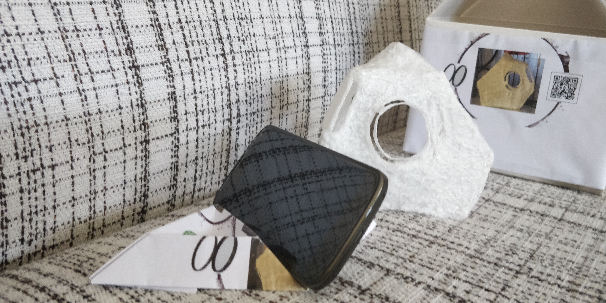
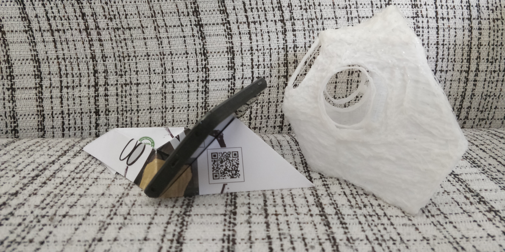
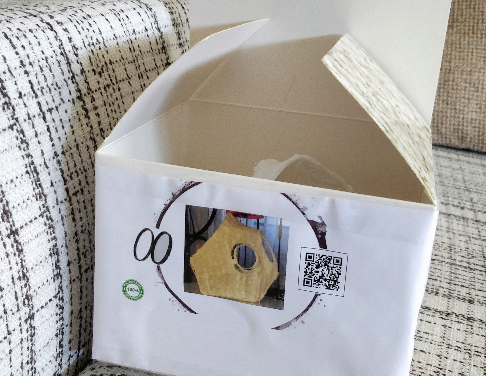
Pesos de una mascarilla de PLA
- En la figura adjunta se observan todos los pesos empleados para la fabricación de una mascarilla por impresión 3D a excepcioón del contorno de silicona
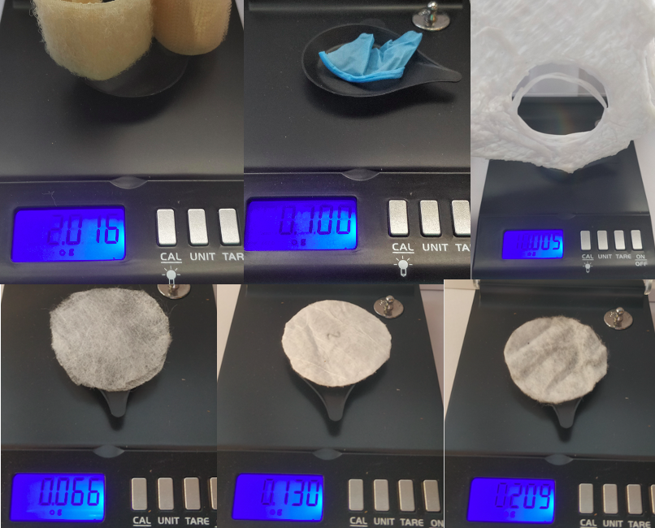
Tasa de Retorno energético
- Antes de aplicar criterios de Análisis de Ciclo de Vida sería recomendable tener en cuenta la Tasa de Retorno Energético (TRE) de una mascarilla fabricada por impresión 3D. "Se conoce como tasa de retorno energético (TRE) o, en inglés EROI (Energy Return On energy Invested) al cociente de la cantidad de energía total que es capaz de producir una determinada tecnología o fuente energética entre la cantidad de energía que es necesaria invertir para obtener ese flujo de energía. Valores favorables a largo plazo de este indicador (es decir, claramente superiores a 1:1), han sido identificados en campos tan diversos como la biología o la antropología como motor clave de la creciente complejidad y evolución de las plantas, los animales y los seres humanos" (Referencia:https://geeds.es/news/publicacion-cientifica-tasa-de-retorno-energetico-tre-dinamica-y-requerimientos-de-materiales-en-escenarios-de-transicion-global-a-las-energias-renovables/)
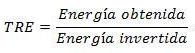
- EVA

Análisis de Ciclo de Vida
- En el ACV de la mascarilla Ecodiseñada se tiene acceso a toda la información a través del software CES Edupack de los materiales empleados para el ecodiseño

- Fibras PP y EVA
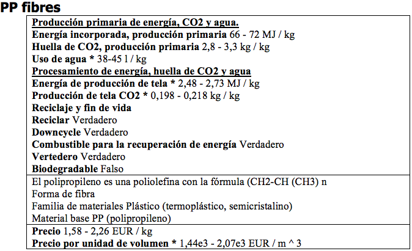
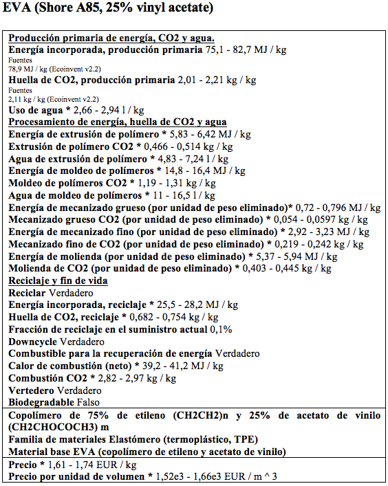
- PLA
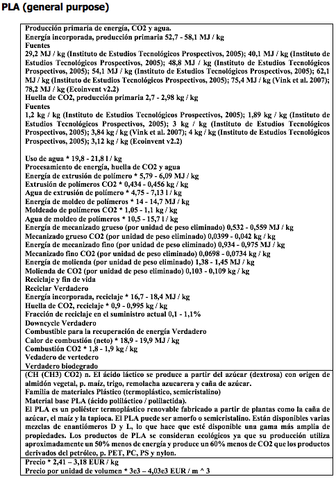
- Velcro
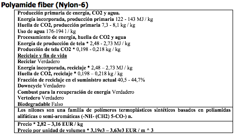
- Silicona
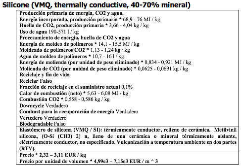
- Nitrilo
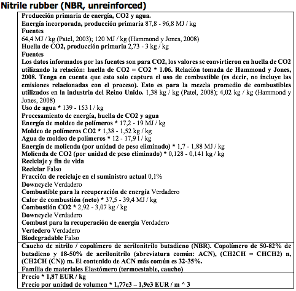
Información adicional Software CES Edupack
- En este apartado se añade la información previa de los materiales empleados en una mascarilla FFP2 que se necesitan para realizar su ACV, con la información técnica de todos los materiales empleados.
- Válvula PP
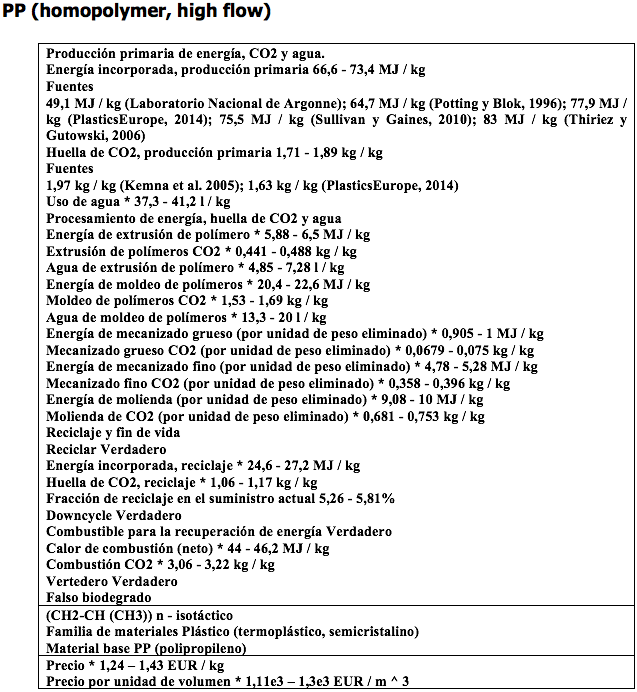
- Diafragma de válvula Poliisopreno
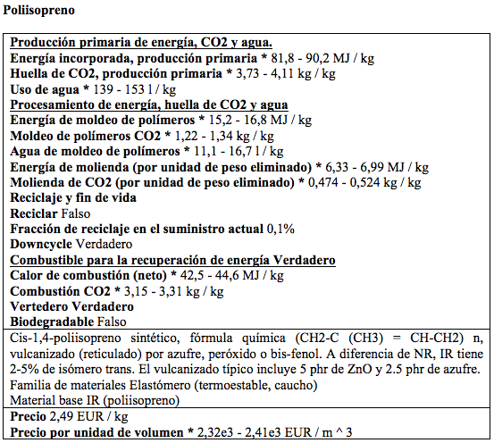
- Poliuretano (PU)
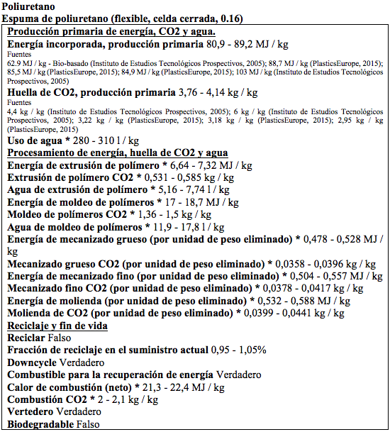
- Aluminio
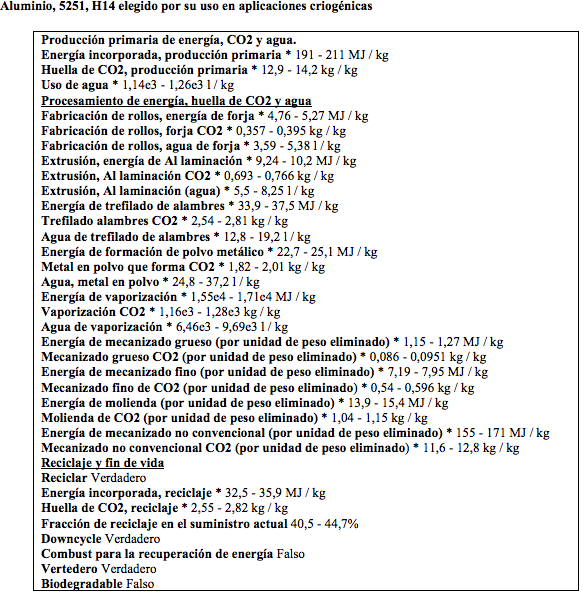
- Acero
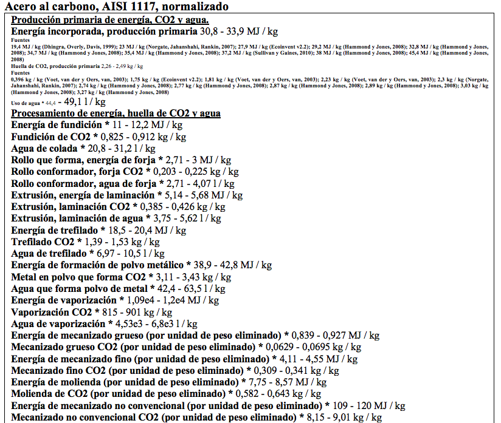
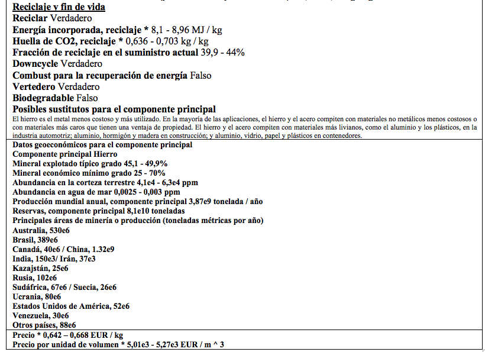